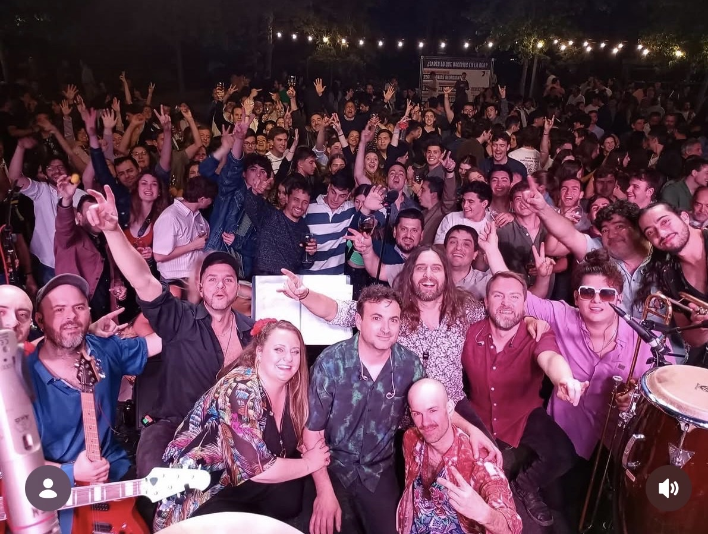
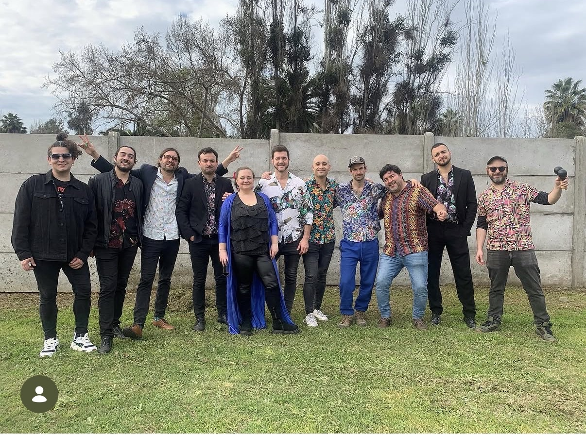
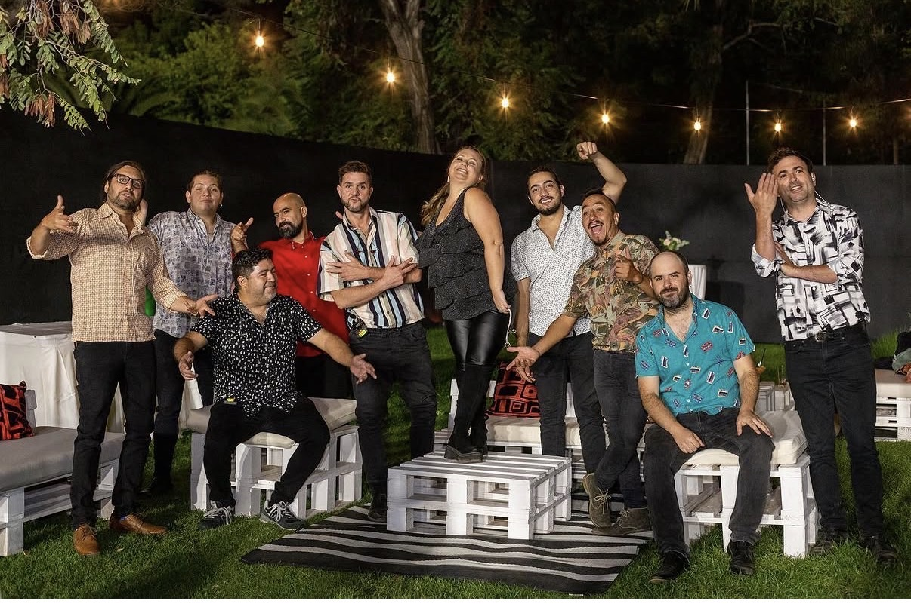
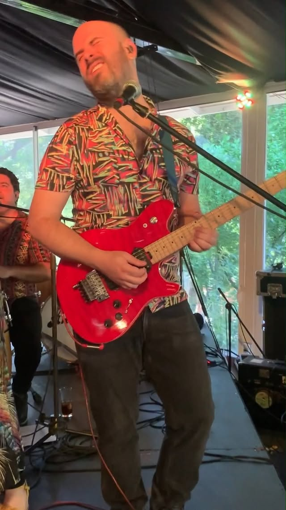

← Bandas
Banda Ancha
Fotos y videos

Foto 1

Foto 2

Foto 3

▶
Video · ver en Instagram
Sebastián Abraham
Teare
Home
Presentación
Clases de piano
Bandas
Audiovisual
Cancionero y Piano Bar
SEBASTIÁN ABRAHAM TEARE